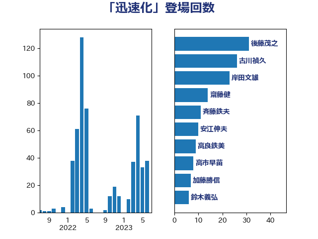

単語「迅速化」

| 後藤茂之 | 自由民主党 | 31 回 |
| 古川禎久 | 自由民主党 | 26 回 |
| 岸田文雄 | 自由民主党 | 23 回 |
| 齋藤健 | 自由民主党 | 14 回 |
| 斉藤鉄夫 | 公明党 | 11 回 |
| 安江伸夫 | 公明党 | 10 回 |
| 高良鉄美 | 無所属 | 9 回 |
| 高市早苗 | 自由民主党 | 8 回 |
| 加藤勝信 | 自由民主党 | 7 回 |
| 鈴木義弘 | 国民民主党 | 6 回 |
| 山田勝彦 | 立憲民主党 | 6 回 |
| 金子恭之 | 自由民主党 | 5 回 |
| 稲津久 | 公明党 | 5 回 |
| 宮崎雅夫 | 自由民主党 | 5 回 |
| 鎌田さゆり | 立憲民主党 | 4 回 |
| 鈴木庸介 | 立憲民主党 | 4 回 |
| 谷合正明 | 公明党 | 4 回 |
| 米山隆一 | 立憲民主党 | 4 回 |
| 空本誠喜 | 日本維新の会 | 4 回 |
| 津島淳 | 自由民主党 | 4 回 |
| 川合孝典 | 国民民主党 | 4 回 |
| 吉田宣弘 | 公明党 | 4 回 |
| 鈴木俊一 | 自由民主党 | 3 回 |
| 金子道仁 | 日本維新の会 | 3 回 |
| 葉梨康弘 | 自由民主党 | 3 回 |
| 田名部匡代 | 立憲民主党 | 3 回 |
| 田中健 | 国民民主党 | 3 回 |
| 河野太郎 | 自由民主党 | 3 回 |
| 林芳正 | 自由民主党 | 3 回 |
| 松野博一 | 自由民主党 | 3 回 |
| 杉久武 | 公明党 | 3 回 |
| 本村伸子 | 日本共産党 | 3 回 |
| 末松信介 | 自由民主党 | 3 回 |
| 日下正喜 | 公明党 | 3 回 |
| 平林晃 | 公明党 | 3 回 |
| 寺田稔 | 自由民主党 | 3 回 |
| 守島正 | 日本維新の会 | 3 回 |
| 鈴木貴子 | 自由民主党 | 2 回 |
| 野中厚 | 自由民主党 | 2 回 |
| 谷公一 | 自由民主党 | 2 回 |
| 西村康稔 | 自由民主党 | 2 回 |
| 神津たけし | 立憲民主党 | 2 回 |
| 浜田靖一 | 自由民主党 | 2 回 |
| 河野義博 | 公明党 | 2 回 |
| 江田憲司 | 立憲民主党 | 2 回 |
| 横山信一 | 公明党 | 2 回 |
| 松本剛明 | 自由民主党 | 2 回 |
| 木原誠二 | 自由民主党 | 2 回 |
| 平山佐知子 | 無所属 | 2 回 |
| 川田龍平 | 立憲民主党 | 2 回 |
| 岸真紀子 | 立憲民主党 | 2 回 |
| 山添拓 | 日本共産党 | 2 回 |
| 尾身朝子 | 自由民主党 | 2 回 |
| 大串正樹 | 自由民主党 | 2 回 |
| 堀場幸子 | 日本維新の会 | 2 回 |
| 嘉田由紀子 | 無所属 | 2 回 |
| 吉田統彦 | 立憲民主党 | 2 回 |
| 佐々木さやか | 公明党 | 2 回 |
| 伊東信久 | 日本維新の会 | 2 回 |
| 中西祐介 | 自由民主党 | 2 回 |
| 中川貴元 | 自由民主党 | 2 回 |
| 中川宏昌 | 公明党 | 2 回 |
| 中司宏 | 日本維新の会 | 2 回 |
| 鶴保庸介 | 自由民主党 | 1 回 |
| 高木真理 | 立憲民主党 | 1 回 |
| 音喜多駿 | 日本維新の会 | 1 回 |
| 阿部弘樹 | 日本維新の会 | 1 回 |
| 鈴木馨祐 | 自由民主党 | 1 回 |
| 赤木正幸 | 日本維新の会 | 1 回 |
| 豊田俊郎 | 自由民主党 | 1 回 |
| 西銘恒三郎 | 自由民主党 | 1 回 |
| 藤巻健太 | 日本維新の会 | 1 回 |
| 萩生田光一 | 自由民主党 | 1 回 |
| 菅義偉 | 自由民主党 | 1 回 |
| 船橋利実 | 自由民主党 | 1 回 |
| 笠井亮 | 日本共産党 | 1 回 |
| 竹内真二 | 公明党 | 1 回 |
| 窪田哲也 | 公明党 | 1 回 |
| 福重隆浩 | 公明党 | 1 回 |
| 神谷政幸 | 自由民主党 | 1 回 |
| 磯崎仁彦 | 自由民主党 | 1 回 |
| 石井拓 | 自由民主党 | 1 回 |
| 畦元将吾 | 自由民主党 | 1 回 |
| 田所嘉徳 | 自由民主党 | 1 回 |
| 牧島かれん | 自由民主党 | 1 回 |
| 牧山ひろえ | 立憲民主党 | 1 回 |
| 熊谷裕人 | 立憲民主党 | 1 回 |
| 渡辺創 | 立憲民主党 | 1 回 |
| 清水真人 | 自由民主党 | 1 回 |
| 深澤陽一 | 自由民主党 | 1 回 |
| 浜田聡 | NHK党 | 1 回 |
| 浅田均 | 日本維新の会 | 1 回 |
| 池畑浩太朗 | 日本維新の会 | 1 回 |
| 柿沢未途 | 無所属 | 1 回 |
| 柴田巧 | 日本維新の会 | 1 回 |
| 松本洋平 | 自由民主党 | 1 回 |
| 平口洋 | 自由民主党 | 1 回 |
| 工藤彰三 | 自由民主党 | 1 回 |
| 岩渕友 | 日本共産党 | 1 回 |
| 岡田直樹 | 自由民主党 | 1 回 |
| 尾崎正直 | 自由民主党 | 1 回 |
| 小林鷹之 | 自由民主党 | 1 回 |
| 小川淳也 | 立憲民主党 | 1 回 |
| 宮澤博行 | 自由民主党 | 1 回 |
| 宮下一郎 | 自由民主党 | 1 回 |
| 室井邦彦 | 日本維新の会 | 1 回 |
| 太田房江 | 自由民主党 | 1 回 |
| 大島九州男 | れいわ新選組 | 1 回 |
| 大口善徳 | 公明党 | 1 回 |
| 塩田博昭 | 公明党 | 1 回 |
| 塩川鉄也 | 日本共産党 | 1 回 |
| 堀内詔子 | 自由民主党 | 1 回 |
| 城井崇 | 立憲民主党 | 1 回 |
| 和田政宗 | 自由民主党 | 1 回 |
| 吉良州司 | 無所属 | 1 回 |
| 吉田久美子 | 公明党 | 1 回 |
| 吉田はるみ | 立憲民主党 | 1 回 |
| 吉田とも代 | 日本維新の会 | 1 回 |
| 倉林明子 | 日本共産党 | 1 回 |
| 伊藤岳 | 日本共産党 | 1 回 |
| 伊藤俊輔 | 立憲民主党 | 1 回 |
| 井野俊郎 | 自由民主党 | 1 回 |
| 井原巧 | 自由民主党 | 1 回 |
| 中野洋昌 | 公明党 | 1 回 |
| 中谷真一 | 自由民主党 | 1 回 |
| 中村裕之 | 自由民主党 | 1 回 |
| 中川郁子 | 自由民主党 | 1 回 |
| 下野六太 | 公明党 | 1 回 |
| 上田勇 | 公明党 | 1 回 |
| 三上えり | 立憲民主党 | 1 回 |
| こやり隆史 | 自由民主党 | 1 回 |
| おおつき紅葉 | 立憲民主党 | 1 回 |